微信 4.5 for iPhone 全新发布
发布日期：2013-02-05
发布版本：微信 4.5 for iPhone 立即下载 (或到手机App Store搜索“微信”)
微信，超过3亿人使用，曾在27个国家和地区的App Store排行榜上排名第一。
微信能够通过手机网络给好友发送语音、文字消息、表情、图片和视频，你还可以分享照片到朋友圈。通过摇一摇、查看附近的人，你可以认识新的朋友。使用扫一扫，你可以扫描二维码。与公众号互动，你还能够听明星唱歌、看新闻、设提醒……
微信在iPhone、Android、Symbian、Windows Phone、BlackBerry等手机平台上都可以使用，并提供有多种语言界面。
iPhone 4.5 版本更新如下：
实时对讲，多人实时语音聊天
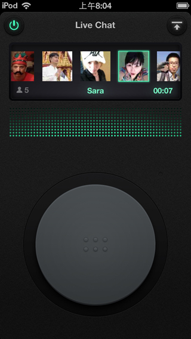将正在听的歌曲摇到手机里
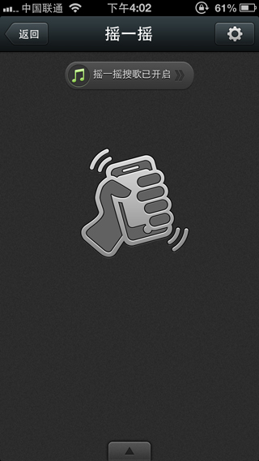 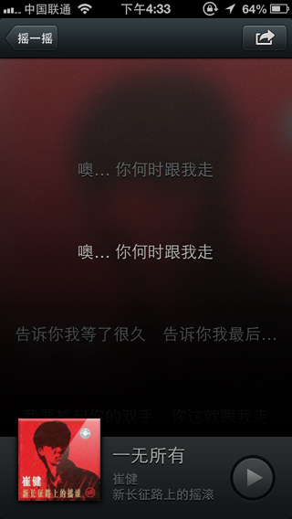群聊也有二维码，扫一扫就能加入
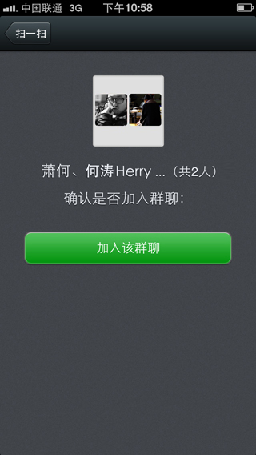搜索聊天记录，方便你迅速翻阅历史聊天
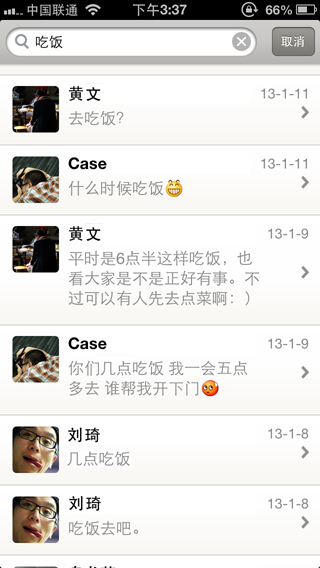聊天记录可以迁移到另外的手机上
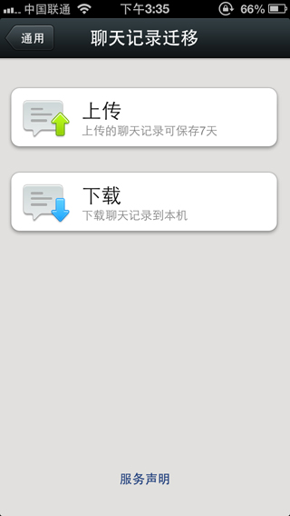 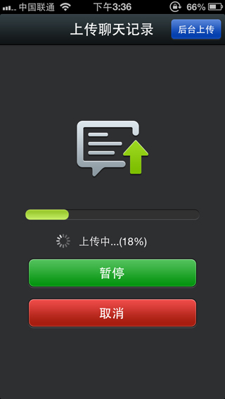可以设置语音提醒，重要事项不再错过
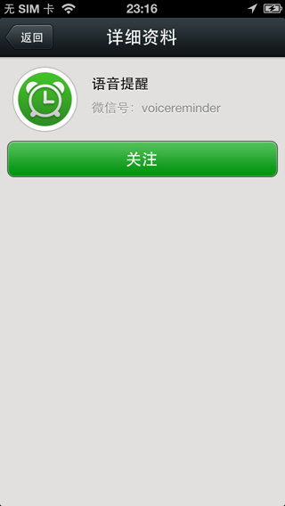 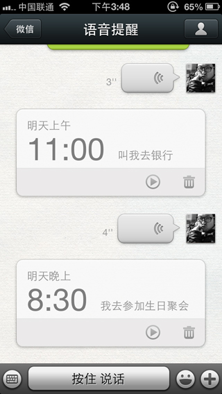聊天可以一次发送多张照片
 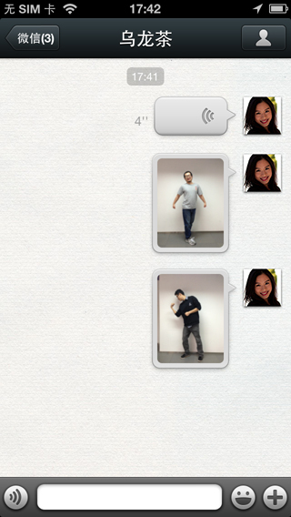
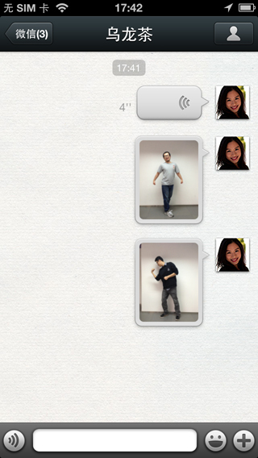语音可以撤销发送
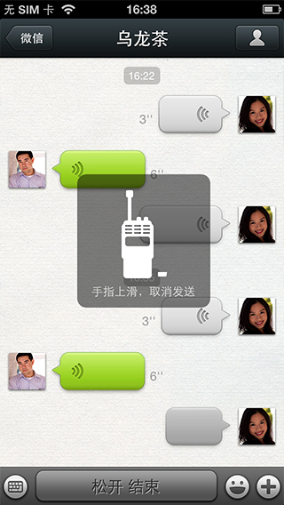 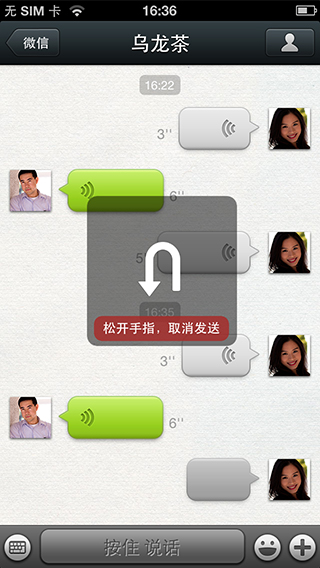可以给自己发消息
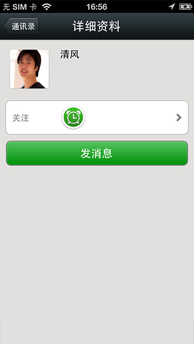 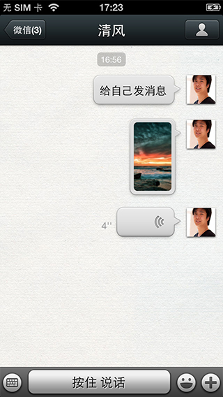可以回复陌生人的打招呼，还能加备注
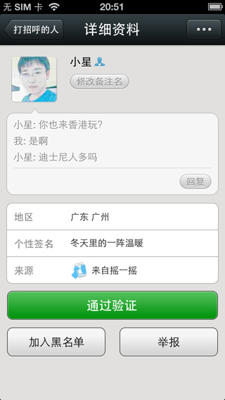 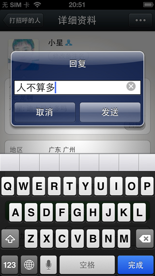朋友发来的位置可以导航
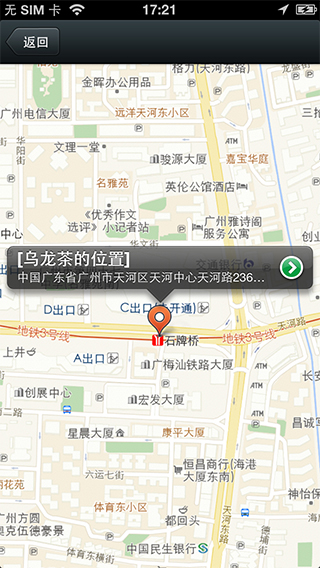 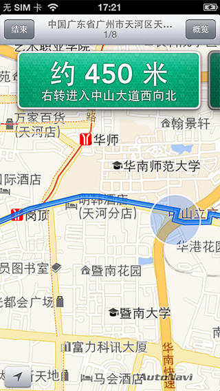刚截的图，点+号可以快速发送
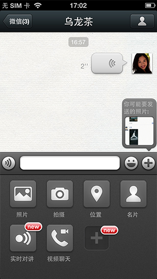 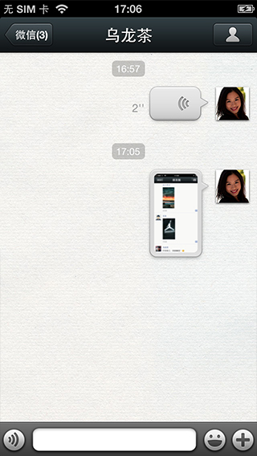发布版本：微信 4.5 for iPhone 立即下载 (或到手机App Store搜索“微信”)
如果您想了解更多详情,或给我们反馈,可以通过以下方式联系我们：
官方网站：http://weixin.qq.com
腾讯微博：@weixin
新浪微博：@腾讯微信团队
微信号 ：weixin